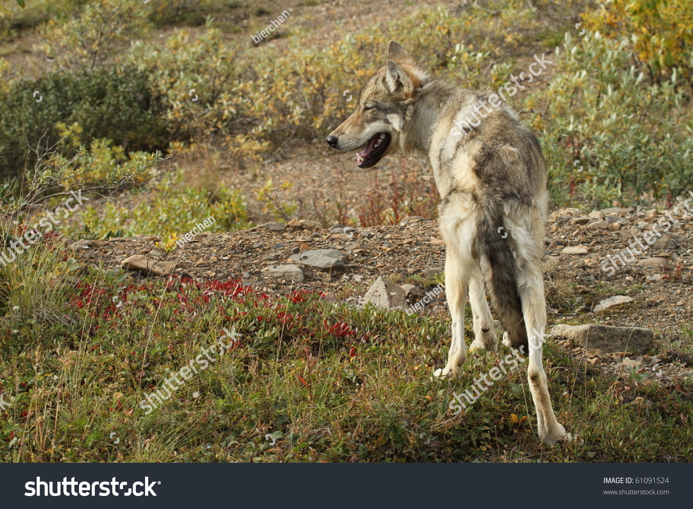
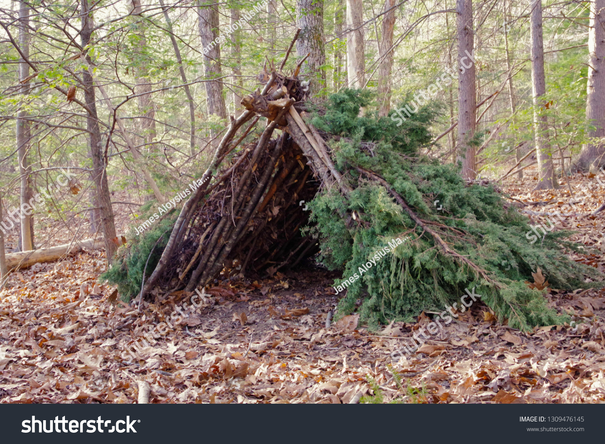
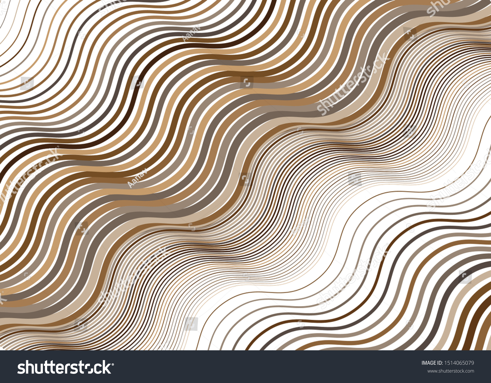
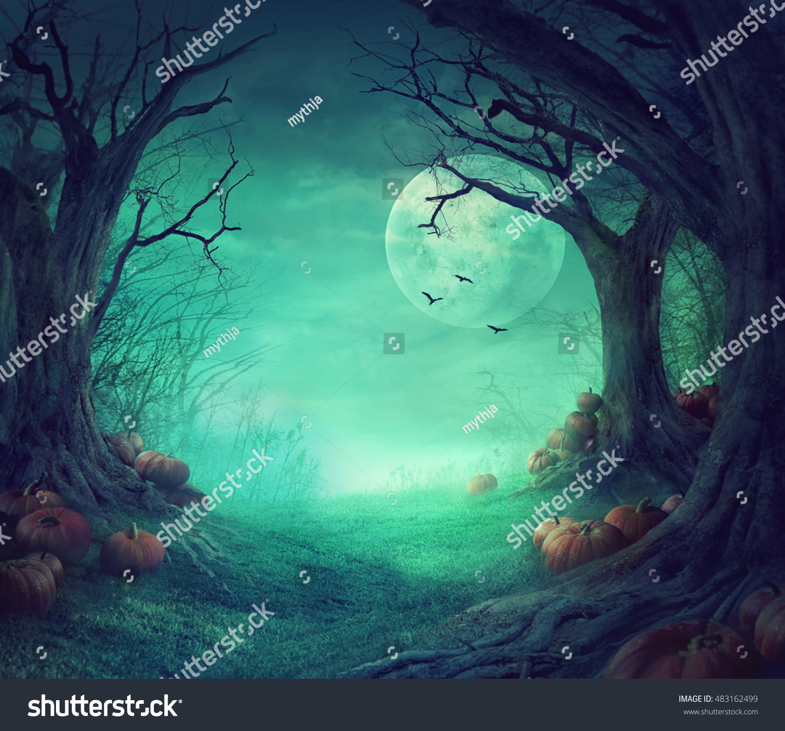
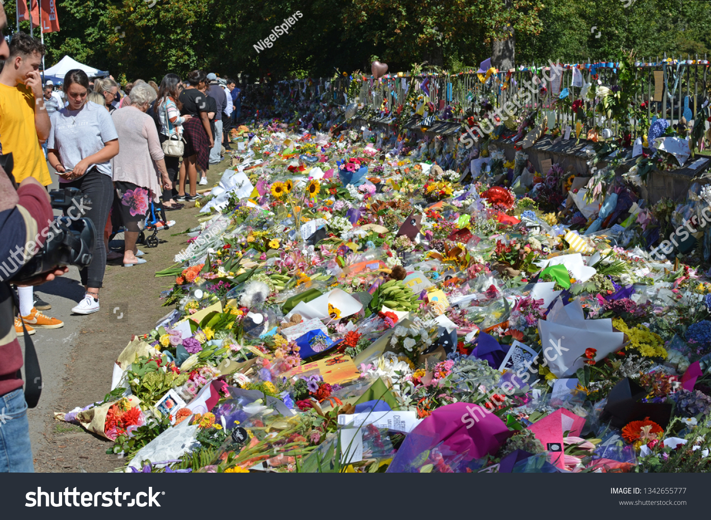
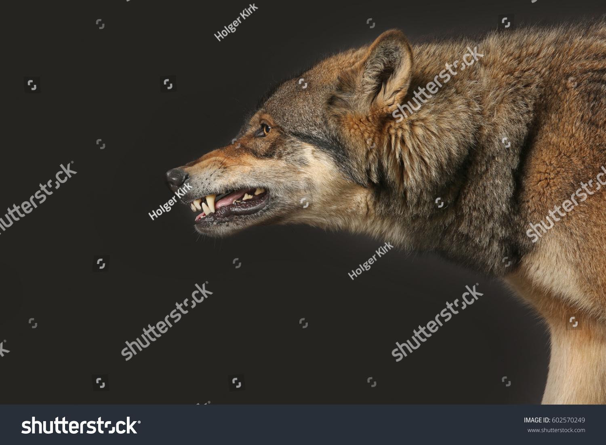
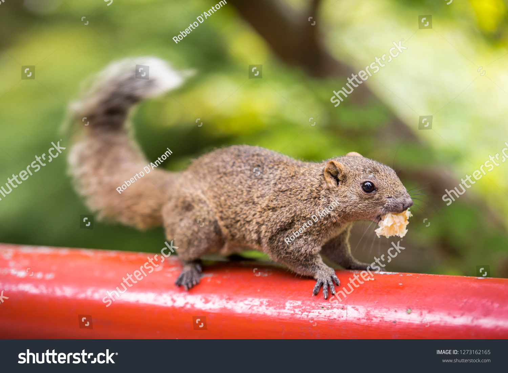

Words to Know
What words should you know to appreciate the rest of Part I of the novel?
Although Miyax has finally made friends with Amaroq and the other wolves in his pack, she
is
still struggling to survive. Getting Jello to share some meat from his "belly basket" had been a desperate
and
dangerous move on her part, and she can't rely on this method forever. The next time she tries, he might
attack
her instead of giving in to his "babysitting" instincts.
Throughout the rest of Part I of Julie of
the Wolves,
the protagonist continues her quest to stay alive in spite of the harshness of the elements, a shortage of
food,
and her loneliness. Some of the words below may be unfamiliar to you, and yet they will be helpful in
understanding Miyax's difficult situation even after winning Amaroq's trust.
| Click on the words below: | |
|---|---|
| Forage |  |
| Improvisation |  |
| Undulate |  |
| Eerie |  |
| Writhed |  |
| Tribute |  |
| Menacingly |  |
| Morsel |  |
← Previous Page